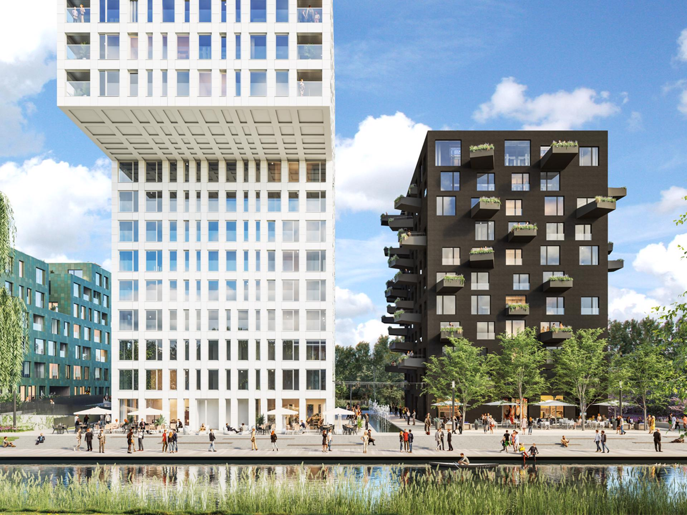
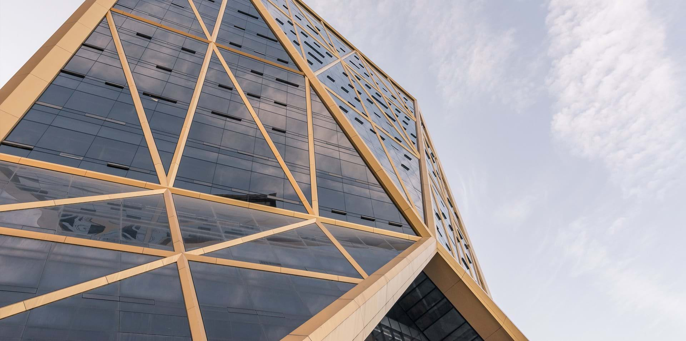
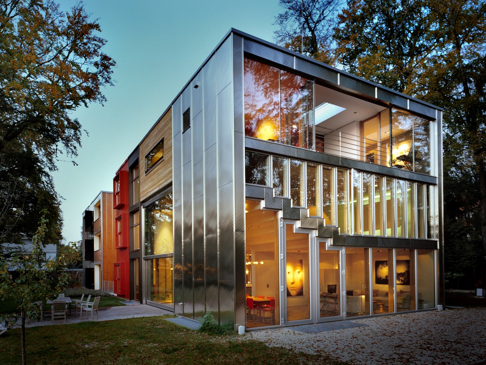
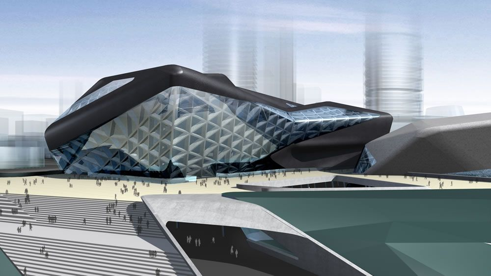
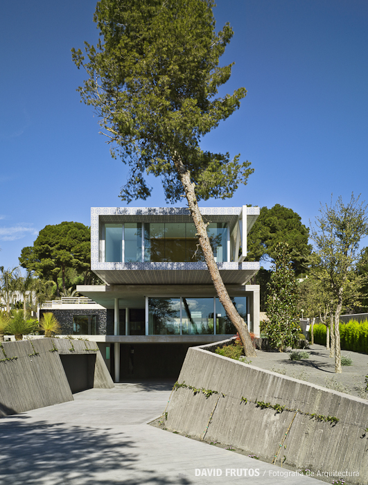
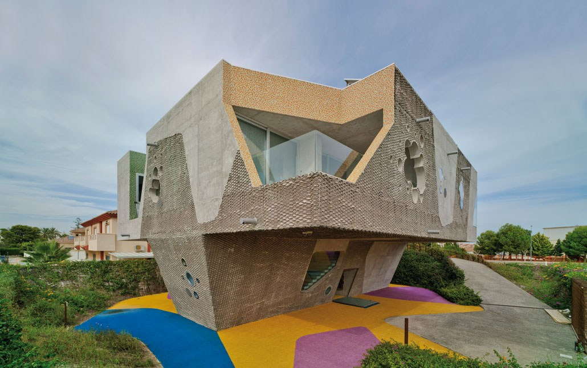

Building in Amsterdam West, Holland.
With MVRDV.

Citic Bank Headquarters in Hangzhou, China.
With Fosters and Partners .

Residential building in Moscou, Rusia.
With MVRDV.

Hause in Munich, Germany.
With MVRDV.

Guangzhou's opera, China.
With Zaha Hadig Architects.

Hause in Murcia, Spain.
Our own design.

Hause in San Javier, Spain.
With MVRDV.